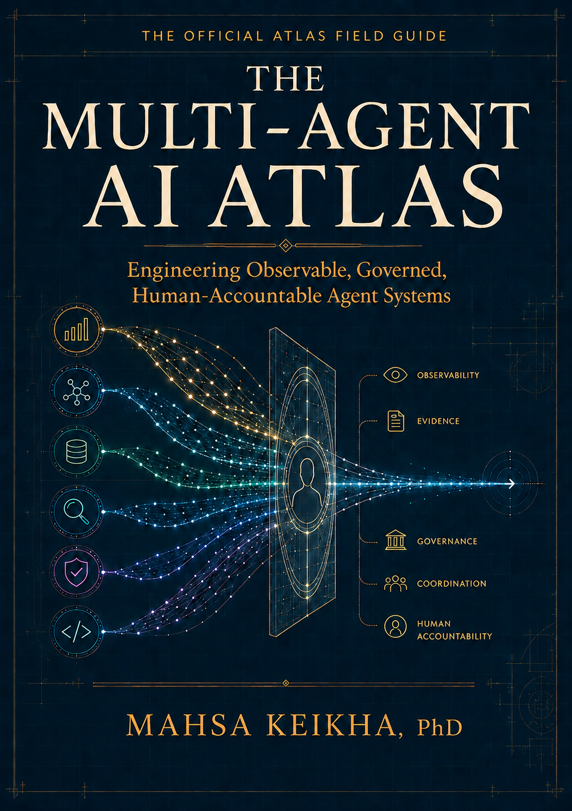

Verified agent systems
Each system is expected to expose its architecture, agents, tools, approval gates, risks, test results, maturity status, and last verification date.
View maturity registryA TRUSTED REFERENCE FOR AGENTIC AND MULTI-AGENT AI
Explore reference architectures, verified maturity records, interactive simulations, reproducible tests, and governance patterns built around one principle: powerful AI should remain visible, accountable, and under meaningful human control.
170 multi-agent systems.
One transparent standard for testing and promotion.
Human authority preserved by design.
THE QUESTION BEHIND THE WORK
Your agents may be capable.
Are they governable?
SEE THE SYSTEM, NOT ONLY THE OUTPUT
Move from architectural discovery to simulation, verification, and inspectable evidence. Each experience reveals a different layer of how multi-agent systems coordinate, fail, and remain accountable.

THE OFFICIAL ATLAS FIELD GUIDE
This standalone field guide connects the 170 reference architectures, ten flagship simulations, public Demo Lab, Gold Standard, repository code, evaluation methods, and human authority model into one professional engineering resource. It establishes the public evidence while organization-specific implementation remains private professional work.
A DESIGN POSITION
A production agent is the model plus the tools it can call, the memory it can retain, the permissions it can exercise, the evidence it can access, the failures it can trigger, and the humans who remain accountable. This project studies that larger engineering surface.
FIVE LAYERS OF TRUST
The library is built around visible evidence, consistent evaluation, reproducible behavior, and meaningful human authority. These are the commitments behind every maturity claim.
Each system is expected to expose its architecture, agents, tools, approval gates, risks, test results, maturity status, and last verification date.
View maturity registryTransparent scoring covers reliability, safety, evidence quality, human oversight, failure handling, observability, reproducibility, security, documentation, and production readiness.
Run a verificationTechnical claims should trace to primary research, official documentation, standards, or reproducible results, with established evidence separated from interpretation and experimental work.
Inspect the sourceScenarios make coordination visible through agent roles, evidence and tool traces, failure cases, human approval points, and downloadable results.
Enter the Demo LabPublic issues, named contributors, version history, citation guidance, a correction path, and transparent limitations make the work open to scrutiny and improvement.
Review or challenge the workThe standard is simple: do not ask people to trust what they cannot inspect.
THE ARCHITECTURE ATLAS
The Atlas turns the full library into a searchable reference. Filter by domain, search by system name or problem, compare architectures, and open any standalone repository directly. It is designed to be useful enough to bookmark, teach from, cite, challenge, fork, and return to.
THE SELECTED FLAGSHIP PORTFOLIO
The flagship portfolio concentrates the strongest commercial and demonstration opportunities from the full Atlas. Each system must show working coordination, a failure challenge, traceable evidence, and a protected decision that remains under human authority.
THE AGENTIC AI GOLD STANDARD
Clear roles, responsibility boundaries, escalation, and prohibited authority.
Explicit workflow control, handoffs, retries, failure states, and bounded autonomy.
Typed tools, validated inputs, policy gates, structured state, and idempotency.
Scoped retention, provenance, correction, deletion, and sensitive-data boundaries.
Held-out tests, adversarial scenarios, regression gates, and acceptance criteria.
Traceable decisions, tool calls, approvals, failures, and external actions.
Least privilege, data minimization, injection resistance, and defensive controls.
Protected actions, meaningful approvals, decision rights, and accountable execution.
Evidence lineage, source fidelity, reproducibility, and auditable decision records.
Release criteria, rollback, incident response, ownership, and continuous improvement.
L3 Gold Standard is an engineering maturity designation defined by this project, not a regulatory certification or legal compliance determination.
READINESS SCORECARD
Twenty engineering questions create an initial maturity estimate. The score is directional. The more important result is where the architecture lacks evidence, boundaries, or fail-closed behavior.
ENTERPRISE WORK
Independent architecture and governance review.
Focused remediation planning toward production maturity.
Design orchestration, tools, memory, evaluation, observability, and authority.
Build tests, traceability, authorization, and release infrastructure.
Align leadership, engineering, security, risk, legal, and product.
Ongoing support for organizations scaling agentic AI.
MULTI-AGENT AI TRAINING
Live training for enterprise teams, technical leaders, engineers, universities, and professional organizations, from executive briefings to applied engineering bootcamps.
FOUNDING PARTNER PROGRAM · THREE OPENINGS
Selected organizations receive a focused multi-agent architecture, governed prototype, evaluation evidence, and an implementation roadmap with human authority designed in from the beginning.
START A CONVERSATION
Share the system at a high level. The first conversation is about scope, authority, evidence, and where production risk is concentrated.
Privacy: Do not submit passwords, API keys, protected health information, customer records, classified information, trade secrets, or confidential source code.
FROM ATTENTION TO EVIDENCE
The public proof layer connects interactive scenarios to architecture, evidence status, limitations, and the decisions that remain protected by human authority.
FLAGSHIP EVIDENCE
Review the public evidence, current status, limitations, architecture, simulation, and maturity boundary for all ten flagship systems.
Inspect flagship evidenceATLAS CHALLENGE
Examine synthetic multi-agent traces and identify the missing evidence, unsafe handoff, or protected action that should stop the workflow.
Take the challengeA PUBLIC REFERENCE, BUILT TO BE USED
If the Atlas helps your research, teaching, architecture work, or production thinking, bookmark it, star the source library, and share the system that was useful.